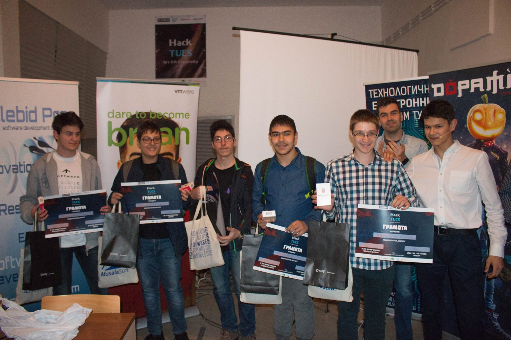
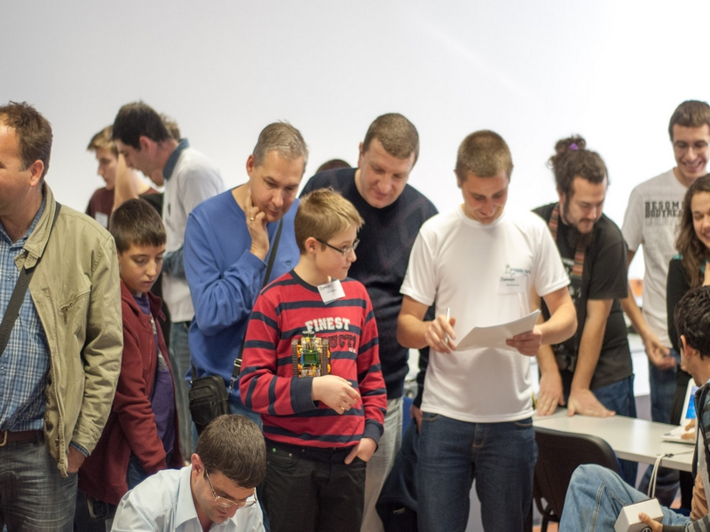

За Мен
Аз съм Георги Корчаков и съм на 16 години. Живея в София, уча в
ТУЕС, специалност "Компютърни мрежи" и съм в 10-ти клас.
Занимавам се с програмиране. Изучавал съм Linux. В четвърти клас
създадох първия си робот с помощта на баща ми. Така се запалих по
компютрите. След това се научих да правя визията на уеб сайтове.
После се заинтересувах от програмните езици и се научих да пиша
на Python 3. С него започнах да правя уеб сървъри. Покрай това
научих sql. Вече в ТУЕС усвоих езика "C" и написах първия си
сайт, използвайки ReactJS. Програмирането ми става все по-интересно
и имам желание да уча нови неща.
Технически умения
Отборни изяви

Hack TUES 3
- Това беше първият ни сериозен хакатон в 8-ми клас. Там взехме трето място. Идеята на проекта беше да се обработват снимки онлайн. Можеше да пишеш и да рисуваш върху снимката и след това да си я изтеглиш.SOFTUNI TECH FEST (юни 2017)
- Там за пръв път показахме проекта "Body Support". Идеята му е да имаш собствен фитнес треньор в нашия сайт, който да ти дава упражнения и хранителна програма.
Спортен Хакатон
- На този хакатон успяхме да усъвършенстваме "Body Support" към много по-добра версия и така взехме 1-во място.Младежко Техническо Творчество 2017
- Тук представяхме училището си на изложението в Горна Оряховица с проекта - "Body Support".Hack 30xTUES 2018
- Четвъртият подред училищен хакатон. Спечелихме специална награда от "Cloud Balkan". Проектът, който представихме, се казваше "Code Hub" и представляваше онлайн платформа за програмиране.World Cup Prediction 2018
- Създадохме сайт, който да прогнозира резултатите от мачовете на Световното първенство по футбол в Русия. Успеваемостта беше 55%. В този проект само аз работих по дизайна и помагах в алгоритъма за познаване на резултатите.
Лични изяви

Робо Лига 2013
- Първата Робо Лига и също така първото мое състезание. Тогава бях на 10 години (4-ти клас) и получих награда за най-малък участник.Робо Лига 2014
- Следващото ми състезание по роботика завърши с трето място в категория "Супер Линия" и второ в категория "2D Лабиринт".
Робо Лига 2015
- Третото подред състезание с роботи. Спечелих две втори места - в категориите "Свободен Стил" и "Супер Линия".